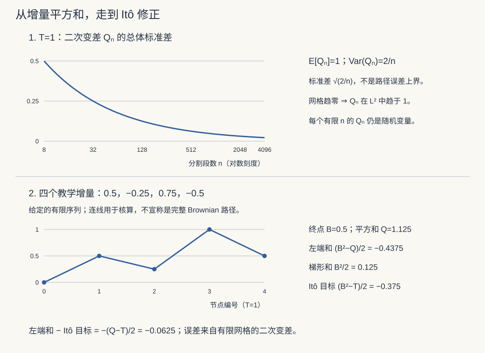

本页目录
随机微积分 I · 二次变差与 Itô 引理
布朗运动处处不可微（随机过程页的结论）——经典微积分对它全面失效。随机微积分重建一套能对布朗运动积分求导的演算，核心只有一条新公理：\((dB)^2 = dt\)。由它长出 Itô 引理——本课程往后每一页（SDE、Black–Scholes、扩散模型）的发动机。
1. 为什么需要新微积分：二次变差

学习层：同一个增量，究竟在逼近哪一种解？
1. 具体实例：带噪声的账户与没有噪声的账户
把账户余额写成 \(X_t\)。若每个小时间片只按比例增长，模型是 ODE
若每个小时间片还受到不可预见的市场踢动，模型变成 Itô SDE
两者的漂移项看起来相同，但第二式的噪声增量典型大小是 \(\sqrt{dt}\)，不是 \(dt\)。因此“把 ODE 的 Euler 步加一项随机扰动”必须精确说明扰动的标度、取值时刻与解的概念。实验台固定一份布朗增量，同时画 ODE、Itô 和 Stratonovich 的数值轨迹；结果揭示前，先不要把最接近某一条曲线的路径叫作“真解”。
2. 先预测：你要预测的是路径、期望，还是解释方式？
提交实验台的三个判断前，先写下理由：
- 若 \(h\) 减半，Itô 的 Euler–Maruyama 强误差应大致按 \(h^{1/2}\) 还是 \(h\) 缩放？ODE 的确定性 Euler 误差呢？
- 把同一个形式写成 \(\sigma(X_t)\,dB_t\) 与 \(\sigma(X_t)\circ dB_t\)，二者的漂移是否完全相同？
- 一条路径在终点偏离解析均值，能否推出终点分布的均值也偏离？
实验先隐藏误差阶、Itô/Stratonovich 的终点表和分布统计；按下“揭示结果”后才显示。这一步刻意把“看见一条漂亮曲线”与“作出关于分布的结论”分开。
3. 正式桥：四个词各自负责哪一本账？
ODE 的 Euler 步是
Itô 的 Euler–Maruyama 步则是
左端点取值使积分适应于当前信息。若系数足够光滑，一维 Itô 与 Stratonovich 记号满足
所以同样的“漂移加噪声”文字，在两种积分约定下不是同一个模型。强解是在给定概率空间、滤子和这一个 Brownian 运动上构造适应过程 \(X\)；弱解允许连概率空间、滤子和 Brownian 运动一起换，只要求某个概率模型实现该方程的分布关系。强解/弱解是解的存在性与唯一性语言，不等同于强/弱数值误差。
在常见的全局 Lipschitz、线性增长条件下，EM 的路径均方根强误差通常是 \(O(h^{1/2})\)，而对足够光滑测试函数 \(\varphi\) 的弱误差
通常是 \(O(h)\)。强误差要用同一份噪声逐路径比较；弱误差只比较期望，不能用一条路径替代。
4. 可操作实验与静态 fallback
静态 fallback（脚本不可用时）：取 \(T=1, X_0=1, a=0.35, \sigma=0.7\)，用同一批固定的标准正态增量聚合到不同步长。ODE 没有随机宽度；Itô 几何布朗运动的精确终点为 \(X_0\exp((a-\sigma^2/2)T+\sigma B_T)\)；Stratonovich 版本的精确终点为 \(X_0\exp(aT+\sigma B_T)\)。正确 EM 的随机项是 \(\sigma X_n\sqrt h Z_n\)，不是 \(\sigma X_n hZ_n\)。
| 对象 | 路径账本 | 分布账本 | 边界 |
|---|---|---|---|
| ODE | 确定性 Euler，误差通常为一阶 | 退化为一个点，不是随机样本 | 不能把 ODE 的阶数套到 SDE |
| Itô | 同一噪声下比较 EM 与精确解 | 用多条终点样本比较均值与方差 | 强阶与弱阶依赖系数、范数和光滑性 |
| Stratonovich | 中点/预测校正读法与 Itô 漂移不同 | 统计量不由一条路径决定 | 有限步实验不是一般收敛定理 |
5. 定理与失败边界
- \((dB)^2=dt\) 是二次变差记账规则；它不表示每条离散路径的平方增量都等于时间增量。
- EM 的强阶 \(1/2\) 与弱阶 \(1\) 是带假设的典型结论；乘性噪声、非 Lipschitz 系数、爆破或不合适的测试函数都可能改变结论。
- 固定一条 Brownian 路径只能支持强误差的耦合比较；它不能证明终点分布、期望或几乎处处结论。
- 细网格曲线更平滑不等于它更接近 Itô 解；若把 \(\sqrt h\) 错写为 \(h\)，极限模型的随机宽度会塌缩。
回顾：布朗运动 \(B_t\)：独立增量、\(B_t - B_s \sim N(0, t-s)\)、路径连续但处处不可微（增量 \(\sim\sqrt{\Delta t}\)，差商 \(\sim 1/\sqrt{\Delta t}\) 爆炸）。
二次变差（新公理的出处）：把 \([0, t]\) 分成 \(n\) 段，考察增量平方和：
证明思路（两行）：每项期望 \(= \Delta t_i\)，和的期望 \(= t\)；方差 \(= \sum 2\Delta t_i^2 \to 0\)（正态四阶矩）——和收敛到常数 \(t\)。\(\blacksquare\)
对比：光滑函数的二次变差为零（\(\sum(\Delta f)^2 \sim \sum (\Delta t)^2 \to 0\)）。布朗运动的平方增量不可忽略且是确定的——微分记号
这三行乘法表是整门课的新增内容，其余全是老微积分带着它重跑一遍。
2. Itô 积分
定义思想：\(\int_0^t f(s)\,dB_s = \lim \sum f(t_i)\big(B_{t_{i+1}} - B_{t_i}\big)\)——被积函数在左端点取值。这不是品味是原则：\(f(t_i)\) 只能用到 \(t_i\) 之前的信息（适应性/不可预见性——赌注必须在开牌前下好；金融语义：交易策略不能偷看未来价格。你预测层的 forward-only 铁律，在此是定义的一部分而非附加纪律）。
两条基本性质：
- 鞅性：\(E\big[\int_0^t f\,dB\big] = 0\)（左端点取值 × 零均值增量——"公平赌博的累积盈亏期望为零"）；
- Itô 等距：\(E\Big[\big(\int_0^t f\,dB\big)^2\Big] = E\Big[\int_0^t f^2\,ds\Big]\)——随机积分的"勾股定理"（\(L^2\) 理论的地基，方差可算）。
（Stratonovich 积分一嘴：取中点的另一种定义，保持经典链式法则但失去鞅性——物理惯用；金融与概率统一用 Itô，两者可互换转换。）
3. Itô 引理（随机世界的链式法则）
定理 \(X_t\) 满足 \(dX = \mu\,dt + \sigma\,dB\)，\(f(t, x)\) 二阶光滑，则
推导（就是带新乘法表的 Taylor 展开）：
经典微积分里 \((dX)^2\) 是高阶小量直接扔；现在 \((dX)^2 = \sigma^2(dB)^2 + \cdots = \sigma^2\,dt\) 是一阶量必须保留——多出来的 \(\frac12\sigma^2 f_{xx}\,dt\) 就是Itô 修正项，随机微积分与经典微积分的全部差异浓缩于此。\(\blacksquare\)
修正项的直觉：\(f\) 凸时（\(f_{xx} > 0\)），噪声的上下抖动经过凸函数后平均向上（Jensen 不等式的瞬时版）——漂移凭空多出一块。
4. 两个必会计算
例 A（\(B^2\) 的反常）：\(f = x^2\)，\(\mu = 0, \sigma = 1\)：
经典答案 \(\frac{B^2}{2}\) 被修正了 \(-\frac t2\)——鞅性验证：右边期望恰为 0 ✓（经典答案期望 \(\frac t2 \neq 0\)，暴露它不是 Itô 积分）。
例 B（几何布朗运动，金融页的主角提前登场）：解 \(dS = \mu S\,dt + \sigma S\,dB\)。对 \(f = \ln S\) 用 Itô（\(f_x = \frac1S, f_{xx} = -\frac{1}{S^2}\)）：
那个 \(-\frac{\sigma^2}{2}\)：波动率对复利增长的隐形税（Itô 修正项的镜像——\(\ln\) 凹，抖动平均向下）。实感：年化收益 ±20% 交替的资产，算术平均 0%，实际年化 \(\approx -2\%\)——波动本身吞噬复利，"波动率拖累"是每个投资者该会算的第一笔随机微积分账。
5. 典型例题
例 1（Itô 引理练手） 求 \(d(e^{B_t})\)：\(f = e^x\)，\(= e^{B}\big(\frac12 dt + dB\big)\)——期望以 \(e^{t/2}\) 增长（对数正态均值 \(e^{t/2}\) 的微分版，概率 II 呼应）。
例 2（构造鞅） 证 \(M_t = B_t^3 - 3tB_t\) 是鞅：Itô 给 \(dM = 3B^2 dB + 3B\,dt - 3B\,dt - 3t\,dB = (3B^2 - 3t)\,dB\)——纯 \(dB\) 项、无漂移 ⇒ 鞅 ✓。"用 Itô 消漂移"是构造鞅的标准手法（下一页风险中性定价的技术核心）。
例 3（验证乘法表） \(d(tB_t) = B\,dt + t\,dB + \underbrace{dt\,dB}_{=0}\)——交叉项按乘法表归零，分部积分公式 \(\int_0^t s\,dB_s = tB_t - \int_0^t B\,ds\) 成立（此例无修正项：\(f = tx\) 对 \(x\) 线性，\(f_{xx} = 0\)——修正项只找弯曲的函数）。\(\blacksquare\)
下一页：让方程整个随机化——SDE、OU 过程与 Fokker–Planck 方程，并与扩散模型正式对账。